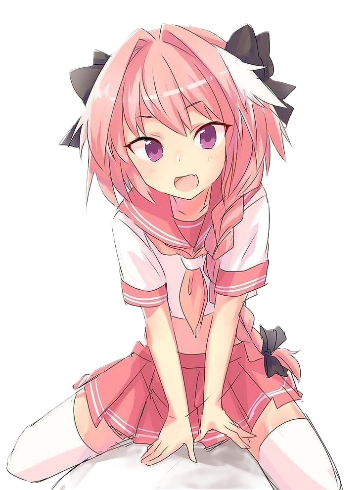

Servis Rutin Motor
Perawatan berkala untuk menjaga performa mesin dan memastikan motor tetap nyaman digunakan sehari-hari.

Kami menyediakan berbagai layanan servis dan perawatan sepeda motor dengan kualitas terbaik.
Perawatan berkala untuk menjaga performa mesin dan memastikan motor tetap nyaman digunakan sehari-hari.
Penggantian oli mesin untuk membantu menjaga pelumasan dan mengurangi gesekan antar komponen mesin.
Layanan poles dan waxing untuk membantu mengembalikan kilau bodi motor, menyamarkan baret halus, serta memberikan perlindungan tambahan pada permukaan cat agar motor terlihat lebih bersih dan mengilap.
Pemeriksaan sistem kelistrikan, termasuk lampu, aki, klakson, dan sistem starter.
Pembersihan dan penyetelan karburator untuk membantu menjaga proses pembakaran dan kestabilan mesin.